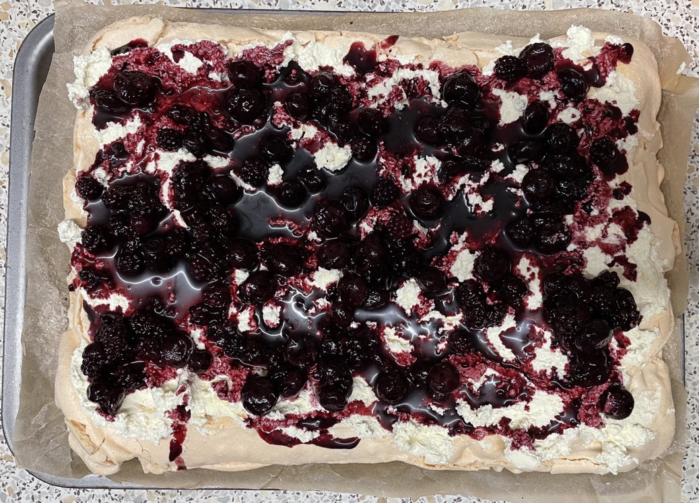

Roulade
Meringue
- Heat oven to 160°C
- Whisk meringue
- Spread over a 30x20cm baking tin lined with baking paper
- Cook for 1 hour mins until crisp on outside, turning down heat to 140° after 10 mins
- Remove from oven and leave to cool
- Flip over meringue onto another sheet of baking paper
- Remove baking paper from meringue
Roulade
- Whisk 300g sweetened cream to soft peaks
- Spread cream evenly over meringue
- Pour or place fruit onto the cream
- Roll up the roulade from shortest side
- Dust with icing sugar to finish
Serving
Notes
- Meringue will have a crisp side (for outside the roulade) and a soft side (for inside the roulade)
- Tiramisu
roulade
Pics
